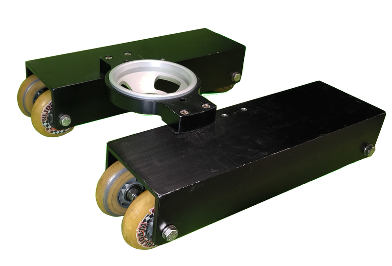

Dana Dolly (100mm Bowl)
Inventory
1 Available
Overview
The Dana Dolly is a portable and versatile camera platform designed to deliver smooth, linear camera movement. Built with robust materials for durability, it excels in a variety of production environments, from small commercial shoots to full-scale film sets. This version features a 100mm bowl for mounting fluid heads, making it compatible with a wide range of mid-to-large cinema and broadcast cameras.
Key Features
- 100mm Bowl Mount: Accommodates standard 100mm video heads for professional setups.
- Heavy-Duty Construction: High-grade materials ensure reliable operation even under heavier camera loads.
- Flexible Track Compatibility: Designed to run on standard speed rails or pipe in various lengths.
- Compact & Portable: Breaks down quickly for easy transport between locations.
- Adjustable Wheel Configuration: Minimizes noise and vibration for smooth camera movement.
- Quick Setup: Tool-free assembly allows you to get up and running fast.
Typical Usage Scenarios
- Smooth Tracking Shots: Provides stable linear motion for cinematic push-ins or reveals.
- Establishing Shots & Reveals: Ideal for subtle movements that add production value.
- On-Location Work: Easily adapts to stands or low-level risers, ensuring flexibility in various shooting environments.
Advantages of a 100mm Bowl System
- Broad Compatibility: 100mm is a common standard for many professional fluid heads and supports.
- Robust Support: Offers the stability and weight distribution needed for heavier cinema or broadcast rigs.
Considerations
- Track Quality: Straight, well-supported rails are essential for the smoothest shots.
- Weight Capacity: Always confirm the recommended load limit to ensure safe operation.
- Setup Surface: Use stable floors or stands to keep your dolly level and balanced during use.
